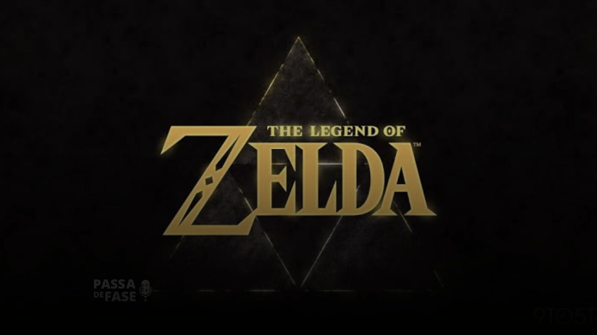

O filme é uma adaptação da famosa série de videogames "The Legend of Zelda", criada pela Nintendo. A história segue Link, um jovem herói que embarca em uma jornada épica para salvar o reino de Hyrule das forças do mal lideradas pelo vilão Ganondorf. Com a ajuda da Princesa Zelda e de outros aliados, Link deve enfrentar desafios perigosos, resolver enigmas e lutar contra inimigos poderosos para restaurar a paz no reino.